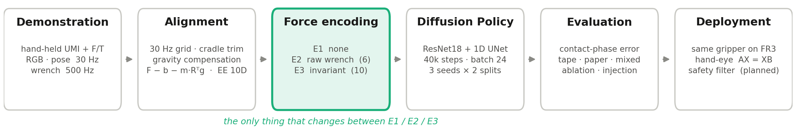
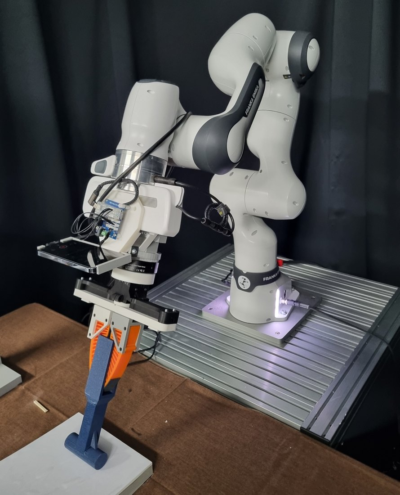
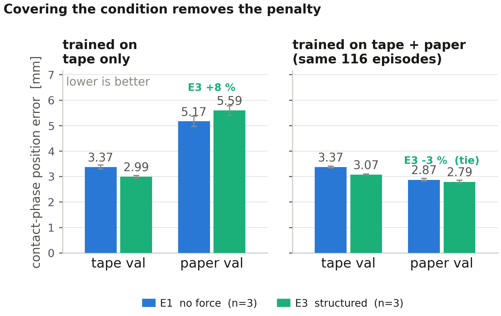
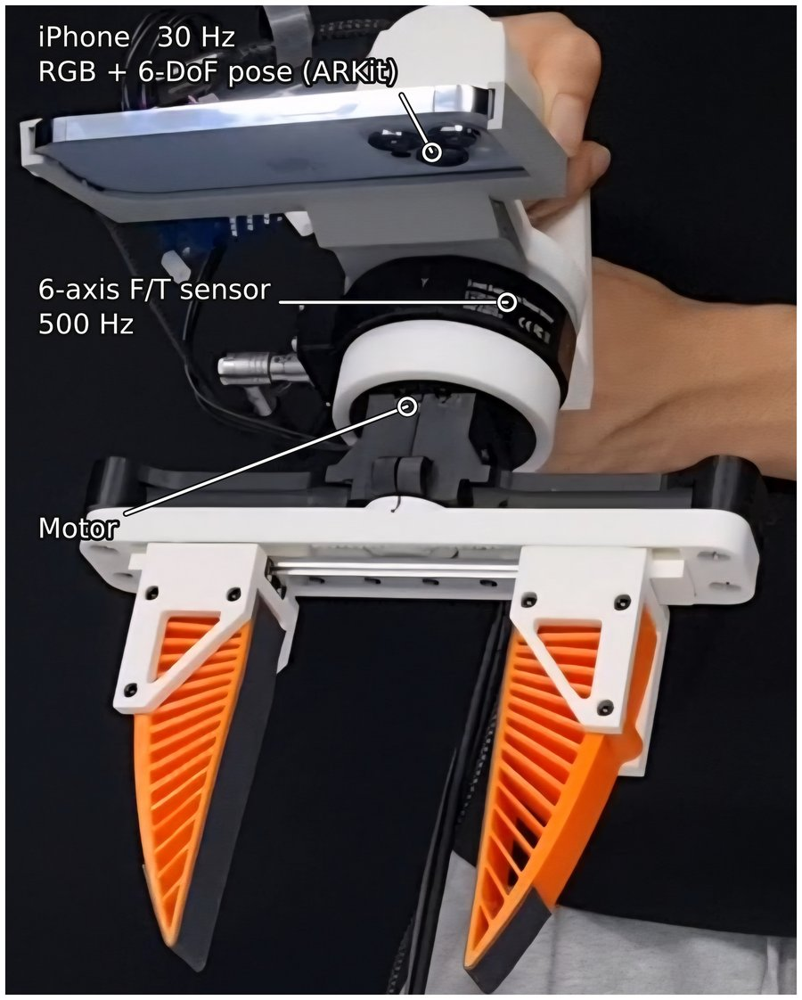
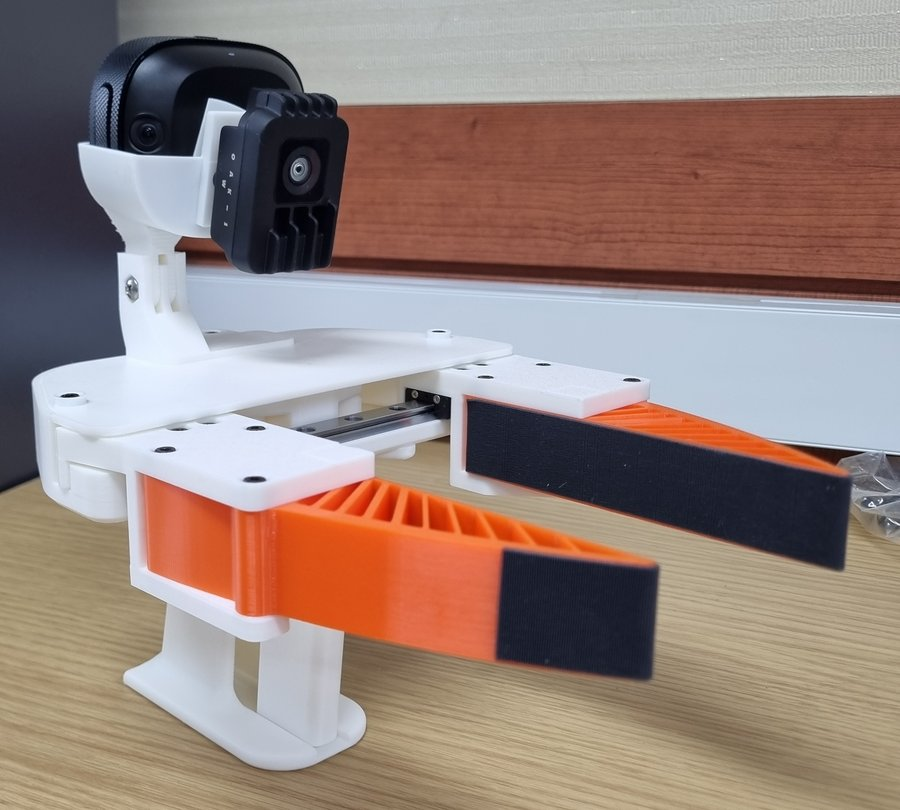
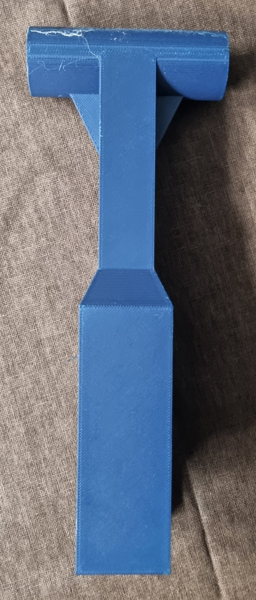

2026 제3회 융합과 혁신: 학부 연구생 학술제 · 포스터
손목 F/T 센서를 통합한 UMI 시연 데이터: Diffusion Policy의 힘 표현 방식 비교
1경희대학교 기계공학부 2경희대학교 기계공학부 교수
시연 데이터 수집
요약
Diffusion Policy는 영상과 손목 자세만으로 시연을 모방하지만, 경사면을 눌러 따라가는 접촉 과제의 결과를 지배하는 마찰과 법선력은 영상에 나타나지 않습니다. 표준 UMI 그리퍼에 6축 힘/토크 센서를 통합해 시연을 모으고, 그 힘을 정책 입력으로 어떤 형태로 넣어야 하는지를 데이터·모델·시드를 고정한 통제 비교(힘 없음 / 원시 렌치 / 물리 구조화, 시드 3개)로 측정했습니다. 학습한 표면과 마찰이 35 % 다른 표면에서 함께 평가하고, 두 표면을 섞어 학습한 경우도 비교했습니다.
힘 표현의 우열은 학습 데이터가 배치 조건을 덮는지에 따라 부호가 바뀝니다. 원시 렌치는 어느 조건에서도 이득이 없고(그러나 힘을 지우면 오차가 87 % 늘어 — 쓰이되 도움이 되지 않음), 물리적으로 구조화한 표현은 덮은 조건에서 9–11 % 이득, 덮지 못한 조건에서는 힘을 안 쓰는 것보다 나쁩니다. 이득은 중력 보상만으로 포화됩니다.
파이프라인

로봇 배포 실험

같은 그리퍼를 FR3에 옮겨 달고 같은 접촉 툴을 물린 구성
시연 장치와 로봇 장치가 같은 기구·같은 센서를 공유합니다. 배포 루프·안전 필터·연구실 FR3 브릿지 연결까지 구현되어 있고, 로봇 없는 모의 브릿지로 폐루프 시험을 통과했습니다. 폐루프 실행 영상은 추가 예정입니다.
핵심 결과 한 장

하드웨어



인용
박지용, 김상현. UMI 기반 시연 데이터를 활용한 Diffusion Policy 학습 및 manipulation 정책 표현 방식 연구. 2026 제3회 융합과 혁신: 학부 연구생 학술제, 경희대학교.